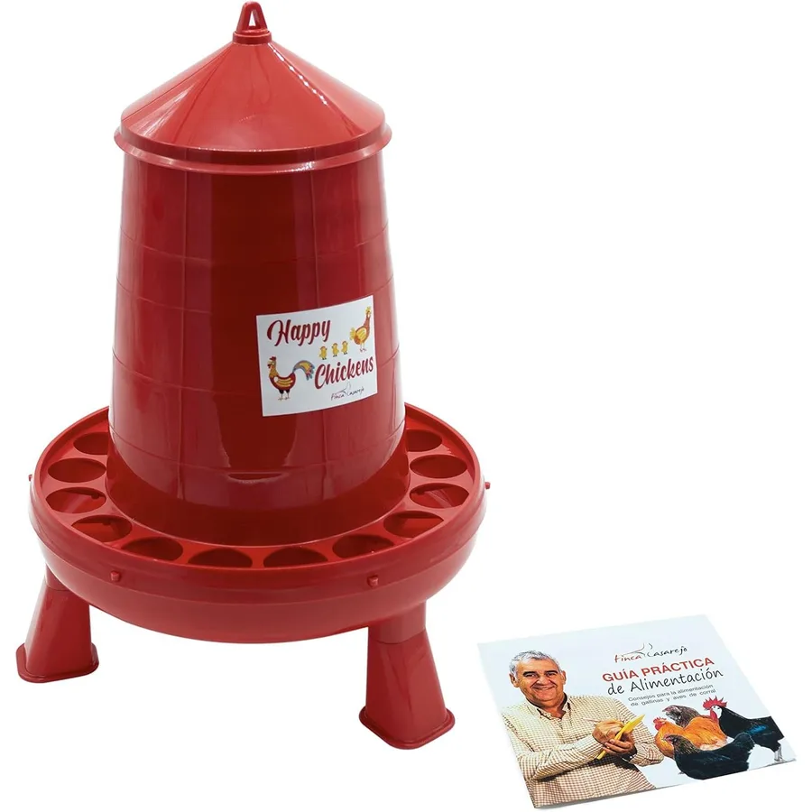

Comederos · Tienda Granja Rentable
Comedero tolva Happy Chickens 2 kg Finca Casarejo

Precio estimado según tu país
Plazo estimado en la lista de países.
- España: 16,95 € · plazo estimado 2–4 días. Envío desde almacén en España, sin gastos de importación.
La tolva Happy Chickens de Finca Casarejo guarda 2 kg de pienso y lo va sirviendo por gravedad en la bandeja, con un diseño antidespilfarro que impide que las gallinas escarben y tiren el alimento al suelo. Va sobre patas, así el pienso queda elevado, seco y lejos de la humedad de la cama. Menos pienso desperdiciado significa menos coste por huevo: en una tolva abierta normal se puede perder hasta un tercio del alimento entre lo que tiran y lo que se moja. Marca avícola española, con envío desde España.
Qué incluye
- 1 comedero tolva Happy Chickens de 2 kg con patas
Para qué puede servir
- Gallineros caseros de 4 a 10 ponedoras
- Reducir el despilfarro de pienso frente a comederos abiertos
- Dejar comida para varios días si te vas un fin de semana
Cómo se usa
- Móntala sobre sus patas en una zona cubierta del gallinero o el parque
- Llénala por arriba y deja que el pienso baje solo a la bandeja
- Revisa el nivel cada pocos días y limpia la bandeja una vez por semana
Quién te vende
Te vende Juan Pablo González García (NIF 78701119H), titular de Granja Rentable. The Honey Trading es un nombre comercial del mismo titular. [PENDIENTE: confirmar si The Honey Trading aparece en el cobro de todos los productos de la tienda o solo en la incubadora]
Precio, plazo y aduana
El precio y el plazo son estimados. El producto se envía directamente desde el proveedor. Pueden existir impuestos, tasas o gestión aduanera no incluidos. [PENDIENTE: confirmar por país si el precio incluye IVA o aranceles] [PENDIENTE: confirmar quién figura como importador en cada país]
Desistimiento, devolución y garantía
Tienes 14 días naturales desde que recibes el producto para comunicar el desistimiento, sin dar motivo. El reembolso, incluidos los gastos de entrega ordinaria, se hace como máximo en 14 días desde esa comunicación. Podemos retener el reembolso hasta recibir el bien o una prueba de que lo has enviado. El coste de la devolución lo asumes tú; te lo decimos antes de que envíes el paquete.
La devolución se envía a la dirección del almacén del proveedor. Esa dirección te la facilitamos cuando nos comunicas el desistimiento, escribiendo a ventas@granjarentable.com. Quien responde ante ti del reembolso y de la garantía legal de conformidad es Granja Rentable, no el proveedor. [PENDIENTE: plazos de garantía legal por país]